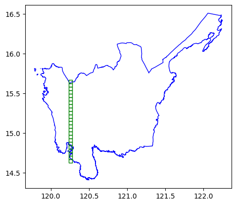
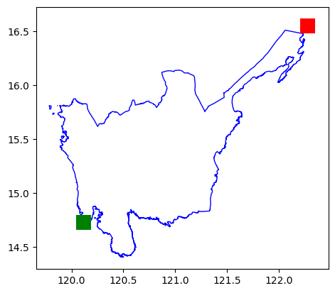
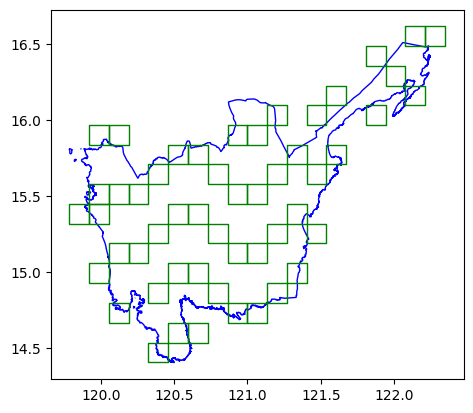
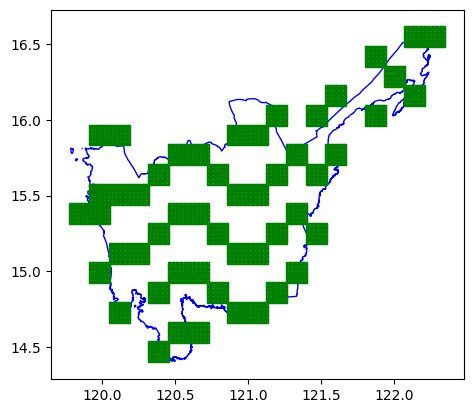
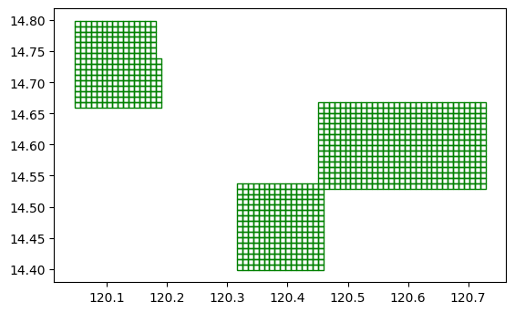

import geopandas as gpd
import pandas as pd
from geowrangler import gridsGrid Generation Tutorial
A basic introduction to geospatial grids

Basic Usage
Creating a grid from a geojson file
Import geopandas and the geowrangler.grids module
Load a sample geojson file into pandas
In our case, we are loading the Region 3 (Central Luzon Administrative Region) of the Philippines.
region3_gdf = gpd.read_file("../data/region3_admin.geojson")This geopandas dataframe has the size:
length of region3_gdf: 1 row(s)region3_gdf| Reg_Code | Reg_Name | Reg_Alt_Name | geometry | |
|---|---|---|---|---|
| 0 | 030000000 | Region III | Central Luzon | MULTIPOLYGON (((120.11687 14.76309, 120.11684 ... |
Show the original plot
import matplotlib.pyplot as pltax = region3_gdf.plot(ax=plt.axes())region3_gdf.crs # CRS info<Geographic 2D CRS: EPSG:4326>
Name: WGS 84
Axis Info [ellipsoidal]:
- Lat[north]: Geodetic latitude (degree)
- Lon[east]: Geodetic longitude (degree)
Area of Use:
- name: World.
- bounds: (-180.0, -90.0, 180.0, 90.0)
Datum: World Geodetic System 1984 ensemble
- Ellipsoid: WGS 84
- Prime Meridian: GreenwichReprojecting Before Gridding
If you’re going to use a custom boundary for SquareGridGenerator and FastSquareGridGenerator, it is good practice to use the buffered boundary of the reprojected AOI instead of using just the boundary of the original AOI. This ensures that we don’t miss out on any grid cells.
We will use EPSG:3857 which is the default projection for both square grid genreator variants.
Note: The 13km buffer here was chosen because it is the minimum buffer size (rounded to the nearest km) where the boundary fully encloses the AOI.
aoi_total_bounds = region3_gdf.to_crs("EPSG:3857").buffer(13_000).total_bounds
aoi_total_boundsarray([13321499.12819502, 1608018.14989316, 13621027.63361816,
1876773.06126797])Square Grid Generator
Generating Grids
Create a grid generator with a size of 5,000 m. The units of the grid size are dependent on the projection parameter
of the grid generator. In this case, the default is EPSG:3857.
grids.SquareGridGenerator?Init signature: grids.SquareGridGenerator( cell_size: float, grid_projection: str = 'EPSG:3857', boundary: Union[geowrangler.grids.SquareGridBoundary, List[float], Tuple[float]] = None, ) Docstring: <no docstring> File: ~/github-repos/geowrangler/geowrangler/grids.py Type: type Subclasses:
grid_generator5k = grids.SquareGridGenerator(5_000) # 5 km x 5 km square cellsGenerate square grids > Notice the time taken to grid the multi polygon at 5K resolution
grid_gdf5k = grid_generator5k.generate_grid(region3_gdf)CPU times: user 340 ms, sys: 35.8 ms, total: 376 ms
Wall time: 376 msgrid_gdf5k.plot()
Show gridded version of sample geojson file at 5K resolution
length of grid_gdf5k: 1074 row(s)ax = region3_gdf.plot(facecolor="none", edgecolor="blue")
ax = grid_gdf5k.plot(ax=ax, facecolor="none", edgecolor="green")In addition to the grid cells, there are 2 extra columns x and y when combined are unique per grid. It can also tell us which grids are adjacent to each other.
grid_gdf5k.head()| x | y | geometry | |
|---|---|---|---|
| 0 | 7 | 8 | POLYGON ((120.10024 14.75528, 120.14516 14.755... |
| 1 | 6 | 8 | POLYGON ((120.05533 14.75528, 120.10024 14.755... |
| 2 | 9 | 8 | POLYGON ((120.19008 14.75528, 120.23499 14.755... |
| 3 | 2 | 24 | POLYGON ((119.87566 15.4491, 119.92058 15.4491... |
| 4 | 2 | 25 | POLYGON ((119.87566 15.49239, 119.92058 15.492... |
ax = region3_gdf.plot(facecolor="none", edgecolor="blue")
ax = grid_gdf5k[grid_gdf5k["x"] == 10].plot(ax=ax, facecolor="none", edgecolor="green")
Gridding at a coarser resolution
Let’s try the same process but with a bigger grid (15K)
grid_generator15k = grids.SquareGridGenerator(15_000) # 15 km x 15 km gridsGenerate square grids > Notice the time taken to grid the multi polygon at 15K resolution (compared to 5K resolution)
grid_gdf15k = grid_generator15k.generate_grid(region3_gdf)CPU times: user 306 ms, sys: 33.7 ms, total: 340 ms
Wall time: 339 msax = region3_gdf.plot(facecolor="none", edgecolor="blue")
grid_gdf15k.plot(ax=ax, facecolor="none", edgecolor="green")Show gridded version of sample geojson file at 15K resolution
length of grid_gdf15k: 154 row(s)Reusing boundaries
If you have 2 polygons that are far from each other but wish to have them follow the reference same reference x and y, you can use pass in custom boudaries.
Let’s load some grids that are from each other
cell1 = grid_gdf15k.head(1)
cell2 = grid_gdf15k.tail(1)pd.concat([cell1, cell2])| x | y | geometry | |
|---|---|---|---|
| 0 | 2 | 2 | POLYGON ((120.05533 14.66839, 120.19008 14.668... |
| 153 | 18 | 16 | POLYGON ((122.21128 16.48548, 122.34603 16.485... |
ax = region3_gdf.plot(facecolor="none", edgecolor="red")
ax = grid_gdf15k.plot(ax=ax, facecolor="none", edgecolor="green")
ax = pd.concat([cell1, cell2]).plot(ax=ax)grid_generator1k = grids.SquareGridGenerator(1_000, boundary=aoi_total_bounds)We reproject cell1 and cell2 to EPSG:3857 before passing them in generate_grid since aoi_total_bounds is already reprojected. The projection of the AOI and the boundary should be the same.
We reproject back to EPSG:4326 after the grids are generated.
cell1 = cell1.to_crs("EPSG:3857")
cell2 = cell2.to_crs("EPSG:3857")gridcell1 = grid_generator1k.generate_grid(cell1)
gridcell1 = gridcell1.to_crs("EPSG:4326")CPU times: user 10.3 ms, sys: 1.19 ms, total: 11.5 ms
Wall time: 11.9 mslen(gridcell1)256gridcell1.head()| x | y | geometry | |
|---|---|---|---|
| 0 | 42 | 42 | POLYGON ((120.04636 14.65975, 120.05534 14.659... |
| 1 | 42 | 43 | POLYGON ((120.04636 14.66844, 120.05534 14.668... |
| 2 | 42 | 44 | POLYGON ((120.04636 14.67713, 120.05534 14.677... |
| 3 | 42 | 45 | POLYGON ((120.04636 14.68582, 120.05534 14.685... |
| 4 | 42 | 46 | POLYGON ((120.04636 14.69451, 120.05534 14.694... |
ax = gridcell1.plot(facecolor="none", edgecolor="green")Note: We pass in the reprojected cell2 in generate_grid since aoi_total_bounds is already reprojected
gridcell2 = grid_generator1k.generate_grid(cell2)
gridcell2 = gridcell2.to_crs("EPSG:4326")CPU times: user 11 ms, sys: 1.86 ms, total: 12.8 ms
Wall time: 11.8 mslen(gridcell2)256gridcell2.head()| x | y | geometry | |
|---|---|---|---|
| 0 | 282 | 252 | POLYGON ((122.20231 16.47691, 122.21129 16.476... |
| 1 | 282 | 253 | POLYGON ((122.20231 16.48552, 122.21129 16.485... |
| 2 | 282 | 254 | POLYGON ((122.20231 16.49414, 122.21129 16.494... |
| 3 | 282 | 255 | POLYGON ((122.20231 16.50275, 122.21129 16.502... |
| 4 | 282 | 256 | POLYGON ((122.20231 16.51136, 122.21129 16.511... |
ax = gridcell2.plot(facecolor="none", edgecolor="red")ax = region3_gdf.plot(facecolor="none", edgecolor="blue")
ax = gridcell1.plot(ax=ax, color="green")
ax = gridcell2.plot(ax=ax, color="red")
Generating grids for multiple distant areas
If you are using AOIs that are vary far from each other, Grid Generator already optmizes the implementation for you
Note: We also reproject sparse_aois to EPSG:3857 since the grid_generator1k boundary is based on EPSG:3857
sparse_aois = grid_gdf15k.iloc[
0:1000:3,
] # Get areas that far from each other
ax = region3_gdf.plot(facecolor="none", edgecolor="blue")
ax = sparse_aois.plot(ax=ax, facecolor="none", edgecolor="green")
sparse_aois = sparse_aois.to_crs("EPSG:3857")sparse_grid = grid_generator1k.generate_grid(sparse_aois)
sparse_grid = sparse_grid.to_crs("EPSG:4326")ax = region3_gdf.plot(facecolor="none", edgecolor="blue")
ax = sparse_grid.plot(ax=ax, facecolor="none", edgecolor="green")
It is a bit hard to see the grids so, we get a subset to verify.
ax = sparse_grid.head(1000).plot(facecolor="none", edgecolor="green")
Fast Square Grid Generator
Generating grids
We can use FastSquareGridGenerator for significantly faster grid generation.
fast_grid_generator5k = grids.FastSquareGridGenerator(5_000) # 5 km x 5 km square cellsfast_grid_gdf5k = fast_grid_generator5k.generate_grid(region3_gdf)
fast_grid_gdf5k.head()CPU times: user 178 ms, sys: 46 ms, total: 224 ms
Wall time: 180 ms| x | y | geometry | |
|---|---|---|---|
| 0 | 26 | 21 | POLYGON ((120.99856 15.31919, 120.99856 15.362... |
| 1 | 18 | 17 | POLYGON ((120.63923 15.14583, 120.63923 15.189... |
| 2 | 15 | 30 | POLYGON ((120.50449 15.7087, 120.50449 15.7519... |
| 3 | 7 | 26 | POLYGON ((120.14516 15.53567, 120.14516 15.578... |
| 4 | 26 | 39 | POLYGON ((120.99856 16.09747, 120.99856 16.140... |
ax = region3_gdf.plot(facecolor="none", edgecolor="blue")
ax = fast_grid_gdf5k.plot(ax=ax, facecolor="none", edgecolor="green")We check that SquareGridGenerator and FastSquareGridGenerator have an exact match in tiles. Since they use different underlying algorithms, it isn’t a 100% guarantee that they will always have the exact same match in tiles due to floating point differences, but they should be extremely close most of the time.
grid_gdf5k.shape[0], fast_grid_gdf5k.shape[0](1074, 1074)grid_gdf5k["xy_key"] = grid_gdf5k.apply(lambda row: f"{row['x']}-{row['y']}", axis=1)
fast_grid_gdf5k["xy_key"] = fast_grid_gdf5k.apply(lambda row: f"{row['x']}-{row['y']}", axis=1)
bool_mask = grid_gdf5k["xy_key"].isin(fast_grid_gdf5k["xy_key"])
assert bool_mask.all()
bool_mask = fast_grid_gdf5k["xy_key"].isin(grid_gdf5k["xy_key"])
assert bool_mask.all()We can even use a more granular cell_size, say 500m, and FastSquareGridGenerator will still run for around the same time as SquareGridGenerator at 5000m cell_size despite the former having ~88 times more grid tiles.
We can also pass in a column name to unique_id_col so that the grids can preserve the ID from the AOI. This makes it convenient so you don’t have to do another spatial intersection between the tiles gdf and the AOI gdf to get the AOI IDs.
fast_grid_generator500 = grids.FastSquareGridGenerator(500) # 500 m x 500 m square cellsfast_grid_gdf500 = fast_grid_generator500.generate_grid(region3_gdf, unique_id_col="Reg_Name")
fast_grid_gdf500.head()CPU times: user 1.06 s, sys: 64.3 ms, total: 1.13 s
Wall time: 1.08 s| x | y | Reg_Name | geometry | |
|---|---|---|---|---|
| 0 | 332 | 102 | Region III | POLYGON ((121.28153 14.85081, 121.28153 14.855... |
| 1 | 191 | 180 | Region III | POLYGON ((120.64822 15.18919, 120.64822 15.193... |
| 2 | 208 | 210 | Region III | POLYGON ((120.72457 15.31919, 120.72457 15.323... |
| 3 | 94 | 246 | Region III | POLYGON ((120.21253 15.47508, 120.21253 15.479... |
| 4 | 202 | 224 | Region III | POLYGON ((120.69762 15.37982, 120.69762 15.384... |
fast_grid_gdf500.shape[0]94133# computes how many more tiles there are in FastSquareGridGenerator 500m vs SquareGridGenerator 5000m
fast_grid_gdf500.shape[0]/grid_gdf5k.shape[0]87.64711359404097H3 Grid Generator
Generating grids
Let us generate grids of resolution 5. To learn more about the different resolution, visit: https://h3geo.org/docs/core-library/restable/
h3_generator = grids.H3GridGenerator(resolution=5)h3_5_gdf = h3_generator.generate_grid(region3_gdf)CPU times: user 1.17 s, sys: 47.8 ms, total: 1.22 s
Wall time: 1.23 sax = region3_gdf.plot(aspect="equal")
ax = h3_5_gdf.plot(ax=ax, facecolor="none", edgecolor="blue", aspect="equal")Not exporting geometry
If you do not plan to use use geometry, you can pass return_geometry=False to just get a normal pandas DataFrame with the ids.
h3_generator_no_geom = grids.H3GridGenerator(resolution=5, return_geometry=False)h3_region3_no_geom = h3_generator_no_geom.generate_grid(region3_gdf)CPU times: user 1.16 s, sys: 56.5 ms, total: 1.22 s
Wall time: 1.22 slen(h3_region3_no_geom)84h3_region3_no_geom.head()| hex_id | |
|---|---|
| 0 | 85694c5bfffffff |
| 1 | 8569413bfffffff |
| 2 | 85694113fffffff |
| 3 | 85696b7bfffffff |
| 4 | 856941abfffffff |
Bing Tile Grid Generator
Generating grids
Let us generate grids of zoom_level 12. To learn more about the different resolution, visit: https://docs.microsoft.com/en-us/bingmaps/articles/bing-maps-tile-system
bing_tile_grid_generator = grids.BingTileGridGenerator(12)# slow
bing_tile_gdf = bing_tile_grid_generator.generate_grid(region3_gdf)CPU times: user 3.18 s, sys: 52.6 ms, total: 3.23 s
Wall time: 3.24 sax = region3_gdf.plot(facecolor="none", edgecolor="blue")
ax = bing_tile_gdf.plot(ax=ax, facecolor="none", edgecolor="green")Not exporting geometry
If you do not plan to use use geometry, you can pass return_geometry=False to just get a normal pandas DataFrame with the ids.
bing_tile_grid_generator_no_geom = grids.BingTileGridGenerator(
12, return_geometry=False
)# slow
bing_region3_keys = bing_tile_grid_generator_no_geom.generate_grid(region3_gdf)CPU times: user 3.18 s, sys: 45.8 ms, total: 3.22 s
Wall time: 3.22 sbing_region3_keys.head()| quadkey | |
|---|---|
| 0 | 132303030330 |
| 1 | 132303030331 |
| 2 | 132303030313 |
| 3 | 132303012302 |
| 4 | 132303012031 |
Converting quadkey to x,y,z format
If you need to convert the quadkey to x,y format, you can pass add_xyz_cols=True to add the x and y columns to the returned dataframe.
bing_tile_grid_generator_add_xyz = grids.BingTileGridGenerator(12, add_xyz_cols=True)# slow
bing_region3_keys = bing_tile_grid_generator_add_xyz.generate_grid(region3_gdf)CPU times: user 3.18 s, sys: 40.6 ms, total: 3.22 s
Wall time: 3.22 sbing_region3_keys.head()| quadkey | x | y | z | geometry | |
|---|---|---|---|---|---|
| 0 | 132303030330 | 3414 | 1878 | 12 | POLYGON ((120.05859 14.68988, 120.05859 14.774... |
| 1 | 132303030331 | 3415 | 1878 | 12 | POLYGON ((120.14648 14.68988, 120.14648 14.774... |
| 2 | 132303030313 | 3415 | 1877 | 12 | POLYGON ((120.14648 14.77488, 120.14648 14.859... |
| 3 | 132303012302 | 3412 | 1869 | 12 | POLYGON ((119.88281 15.45368, 119.88281 15.538... |
| 4 | 132303012031 | 3411 | 1866 | 12 | POLYGON ((119.79492 15.70766, 119.79492 15.792... |
Fast Bing Tile Grid Generator
Generating grids
Let us generate grids of zoom_level 12 using the FastBingTileGridGenerator. This should run significantly faster than BingTileGridGenerator
fast_bing_tile_grid_generator = grids.FastBingTileGridGenerator(12)fast_bing_tile_gdf = fast_bing_tile_grid_generator.generate_grid(region3_gdf)CPU times: user 126 ms, sys: 41.9 ms, total: 168 ms
Wall time: 128 msax = region3_gdf.plot(facecolor="none", edgecolor="blue")
ax = fast_bing_tile_gdf.plot(ax=ax, facecolor="none", edgecolor="green")
We check that BingTileGridGenerator and FastBingTileGridGenerator have an exact match in tiles. Since they use different underlying algorithms, it isn’t a 100% guarantee that they will always have the exact same match in tiles due to floating point differences, but they should be extremely close most of the time.
bing_tile_gdf.shape[0], fast_bing_tile_gdf.shape[0](319, 319)bool_mask = bing_tile_gdf["quadkey"].isin(fast_bing_tile_gdf["quadkey"])
assert bool_mask.all()
bool_mask = fast_bing_tile_gdf["quadkey"].isin(bing_tile_gdf["quadkey"])
assert bool_mask.all()We can even use a higher zoom_level, say 17, and FastBingTileGridGenerator will still run significantly faster than BingTileGridGenerator at zoom_level 12 despite the former having ~783 times more grid tiles.
We can also pass in a column name to unique_id_col so that the grids can preserve the ID from the AOI. This makes it convenient so you don’t have to do another spatial intersection between the tiles gdf and the AOI gdf to get the AOI IDs.
fast_bing_tile_grid_generator = grids.FastBingTileGridGenerator(17)fast_bing_tile_gdf = fast_bing_tile_grid_generator.generate_grid(region3_gdf, unique_id_col = "Reg_Name")
fast_bing_tile_gdf.head()CPU times: user 1.82 s, sys: 109 ms, total: 1.93 s
Wall time: 1.86 s| Reg_Name | quadkey | geometry | |
|---|---|---|---|
| 0 | Region III | 13230301313023130 | POLYGON ((120.80292 15.72088, 120.80292 15.723... |
| 1 | Region III | 13230301313233111 | POLYGON ((120.84961 15.64155, 120.84961 15.644... |
| 2 | Region III | 13230301331132213 | POLYGON ((120.90454 15.54367, 120.90454 15.546... |
| 3 | Region III | 13230301332000003 | POLYGON ((120.59143 15.44839, 120.59143 15.451... |
| 4 | Region III | 13230310112103320 | POLYGON ((122.11578 16.42818, 122.11578 16.430... |
fast_bing_tile_gdf.shape[0]249818# computes how many more tiles there are in FastBingTileGridGenerator zoom 17 vs BingTileGridGenerator zoom 12
fast_bing_tile_gdf.shape[0]/bing_region3_keys.shape[0]783.128526645768